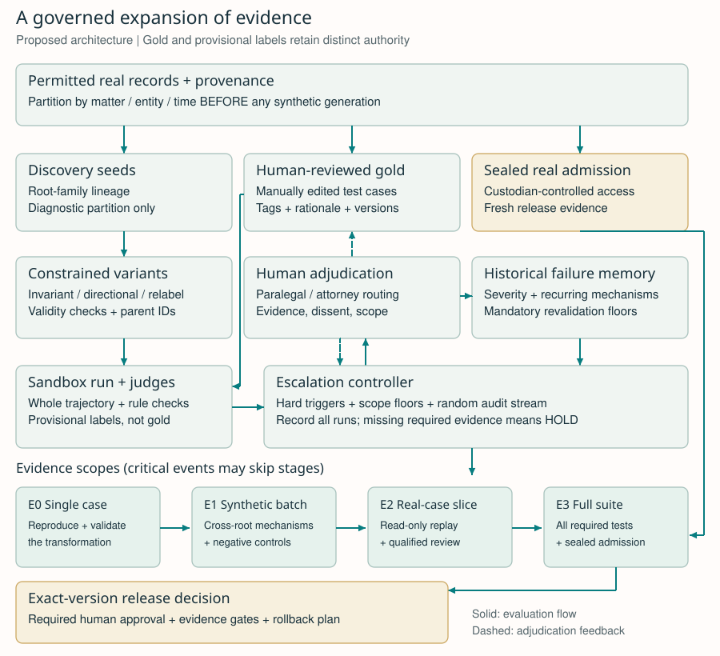

Escalating Validation for Agentic AI
A human-grounded architecture for synthetic testing, failure memory, and release decisions
David C. Liu · Independent Research · September 22, 2026 · Version 1.0
Research status. This white paper proposes an architecture and an evaluation protocol. It reports no experiment demonstrating that the complete architecture reduces failures, saves reviewer time, or establishes deployment safety. Metis is the motivating legal research system; the design is intended to generalize to other domains with scarce expert labels.
Abstract
Agentic systems can generate candidate improvements faster than domain experts can validate them. Using a language model to label the resulting test cases scales evaluation, but can also entrench the evaluator's errors. We propose an architecture that combines constrained synthetic variations of real records, provisional LLM judgments, and versioned human-adjudicated datasets. Its central mechanism is an escalation controller: evidence of a failure expands the scope of validation from an individual synthetic case to a related batch, then to real cases, and finally to the complete release suite. Historical failures impose minimum review requirements; critical events can skip intermediate stages. Attorneys or paralegals receive bounded questions with source evidence, competing interpretations, and the consequences of each answer. Their decisions become reviewable records with explicit applicability and expiry, rather than unqualified ground truth. The design separates regression testing from statistical admission, preserves a random audit stream to find shared blind spots, and blocks release when required evidence is missing. We specify data contracts, transition rules, a worked fictional example, and a falsifiable research plan. The proposed contribution is a coordinated validation protocol, not a new oversampling algorithm or a general confidence measure for language models.
1. The labeling bottleneck
In Metis, an agent may propose a feature, extract it from a legal record, diagnose a mistake, and recommend a repair. Every stage creates a labeling question. Does a quotation support the feature? Did a changed fact alter the expected result? Is an apparent error a model failure, a faulty reference label, or a boundary on which reasonable reviewers disagree? A recorded case outcome does not automatically answer these questions: an administrative disposition is different from extraction correctness, procedural validity, or the merits of a legal argument.
An LLM judge is useful for triage, but agreement with that judge is an imperfect optimization target. Research documents position and verbosity biases in LLM evaluation, alongside useful agreement with human preferences in the studied conversational tasks. Those results do not establish reliability in legal review. Zheng et al., 2023. Experiments also document self-preference associated with models recognizing their own generations. This is evidence of a possible failure mechanism, not proof that every model or provider exhibits an identical bias. Panickssery et al., 2024.
Changing providers may expose disagreements, but is not evidence of statistical independence: models can share training material, conventions, and missing domain knowledge. Humans can also share misconceptions or be anchored by a persuasive machine explanation. The proposed system therefore combines different kinds of evidence and makes the limits of each explicit.
The unit of progress is a resolved, scoped question: what failed, under which conditions, who decided the acceptable behavior, and which independent evidence supports a repair? Automation should prepare and route that question, expand the relevant tests, and preserve the answer. It should not quietly turn a provisional machine label into the authority against which future machines are optimized.
2. Architecture and authority boundaries
The architecture has four cooperating services: a case and lineage store, a sandboxed runner, an escalation controller, and a human adjudication workbench. A separate evaluator owns release evidence. The runner records the full observable trajectory: retrieved sources, tool requests and responses, intermediate structured outputs, final answer, and side effects attempted. An answer can be correct while the process that produced it violates an access boundary or takes an unauthorized action.
| Component | Responsibility | Authority boundary |
|---|---|---|
| Case store | Retain provenance, source versions, permissions, partitions, and parent-child relationships | A derivative cannot change its parent's partition |
| Synthetic generator | Propose constrained variants and declare what should remain invariant or change | Cannot certify its own expected label |
| Runner and judges | Execute candidate and incumbent in isolation; record checks and provisional ratings | Cannot edit reference labels, admission data, or release policy |
| Escalation controller | Expand evaluation scope and open questions under a versioned policy | Cannot waive mandatory review to meet a budget |
| Human workbench | Qualify evidence, resolve ambiguity, approve scoped labels and repairs | Cannot rewrite historical runs or retroactively move gate thresholds |
| Release evaluator | Apply frozen requirements to committed candidate artifacts and assigned cases | Does not repair the candidate after examining admission results |
Real-case evaluation means a read-only replay of permitted records with external actions mocked or disabled. Expanding from synthetic to real cases must not expand network access, client authority, or permission to file, send, or modify anything. Experimental code receives no release credentials. Data, prompts, tool responses, and generated rationales remain untrusted inputs; instructions embedded in them do not alter evaluator policy.

Figure 1. Solid arrows show evaluation flow. Dashed arrows show human feedback and future-cycle updates. Neither discovery nor synthesis can read the sealed admission set. The four escalation stages are evidence scopes, not permission levels for acting on real cases.
3. Three data layers, with different jobs
3.1 Real seeds and synthetic diagnostic families
First partition real records by the unit that could leak information: matter, client, document family, related proceeding, or time block. Choose the grouping that reflects the task, and document unresolved cross-group dependence. Only then generate synthetic descendants. All descendants retain their parent identifiers and remain in the same partition. Multi-parent variants are allowed only when every parent belongs to that partition.
The generator increases coverage around sparse failure mechanisms by editing real-seed structure: negate a clause, remove a decisive fact, change a date consistently, substitute a jurisdiction with its applicable rubric, alter a document's provenance, or simulate a missing retrieval result. These are constrained semantic transformations. Ordinary SMOTE creates synthetic minority examples by interpolating between neighboring feature vectors; that operation does not establish the legal coherence of blended narratives. The inspiration here is targeted coverage of rare regions, not literal interpolation of legal text. Chawla et al., 2002.
Each transformation must declare one of three contracts: invariant (the relevant label should stay the same), directional (a specified output should change in a stated direction), or relabel-required (no expected answer is inherited). Date edits must preserve chronology, identity changes must preserve coreference, and jurisdiction edits require an applicable authority bundle. Impossible combinations are rejected or retained as explicitly invalid-input tests. Uncertain validity routes to review. A generated expectation is itself provisional until supported by an approved transformation rule or human adjudication.
Sampling covers both individual tags and selected tag intersections. A bounded covering design can explore combinations such as negation × missing source without enumerating every permutation. Caps per parent and deduplication prevent one interesting record from dominating the suite. Hundreds of siblings may reveal a systematic defect; they do not become hundreds of independent observations about production risk. Synthetic perturbation is also not anonymization: rights, access controls, and disclosure limits follow the source material.
3.2 Human-adjudicated regression gold
The golden dataset contains manually edited test records and human-reviewed real cases, grouped by failure mechanism. A label package contains the expected value or allowed set of values, acceptable abstention behavior, decisive source spans, rubric version, reviewer rationale, jurisdiction and time scope, and adjudication history. It can test a single extraction, a tool choice, a sequence of actions, or an entire answer. Outcome labels and feature labels remain separate.
Gold is versioned rather than presumed infallible. A questioned label creates a new review request; it does not disappear because it reduces the score. Corrections create a superseding version with a reason and a list of affected cases. Freeze a snapshot during a comparison. If a material label defect is discovered, invalidate that comparison and restart under a newly registered snapshot. Show the effect of the label correction separately from the effect of a model change.
Regression gold may be visible to developers. Once it guides repairs, it measures retained behavior on known cases; it is no longer an untouched estimate of generalization. Mechanism-oriented tests follow the broader tradition of behavioral testing, including capability matrices and invariance tests in CheckList. Ribeiro et al., 2020.
3.3 Sealed admission and prospective audits
A custodian holds a disjoint admission set of human-adjudicated real records. Developers, generators, and diagnostic judges do not receive its items, labels, or rationales. The custodian commits the candidate identity, evaluation policy, sampling plan, and sample size before scoring. Detailed failed admission cases can later become regression tests, but then leave the sealed pool and must be replaced before another independent admission claim.
Repeatedly testing new candidates against a fixed hidden set still leaks information through accept/reject feedback. A frozen file alone does not solve adaptive overfitting. Formal reusable-holdout methods address this problem under particular mechanisms; this proposal does not claim to implement them. Dwork et al., 2015. The initial design instead permits one nominated candidate per fresh admission batch, logs all attempts, and uses a predeclared error budget across release attempts when making repeated statistical claims.
A prospective random audit samples from the intended deployment population, including machine-approved cases. It is separate from the failure-selected review queue. This stream can reveal cases that every judge rates highly but humans find defective. Report its sampling frame and inclusion probabilities; without those, a selected queue's error rate cannot stand in for a population error rate.
4. Judging, failure tags, and durable feedback
A judge produces criterion-level ratings, cited evidence, a short justification, and an explicit abstain option. Preserve raw ratings before aggregation. Use deterministic validators where a property is directly checkable: schema validity, literal quotation presence, tool permission, or temporal consistency. A quotation-presence check does not establish that the quotation supports the conclusion.
Use independently configured judges, blind them to candidate identity where possible, and randomize answer order in pairwise comparisons. Run controlled order swaps on a sample. Track judge-human confusion matrices by tag and model version, including false acceptance of serious errors. If numerical probabilities are collected, evaluate their calibration on held-out human labels. A judge's stated confidence is never, by itself, a probability that the output is correct. Judge agreement can lower review priority only where held-out human evidence supports doing so; it cannot cancel mandatory review.
An initial taxonomy should be small enough for reviewers to use consistently:
| Failure family | Example question | Required evidence or review |
|---|---|---|
| Grounding and fabrication | Does the cited source support this extracted value? | Source span plus semantic adjudication |
| Negation and missingness | Was absence of evidence treated as evidence of absence? | Minimal contrasting pair; explicit unknown state |
| Temporal or jurisdictional scope | Was the rule applicable to this record at this time? | Versioned authority and applicability review |
| Procedural posture and authority | Was an allegation treated as a finding, or a party's claim as the court's conclusion? | Document role, speaker, and context |
| Agent execution | Was a tool used without authorization, or did a retry duplicate an action? | Full action trace and deterministic checks |
| Reference-label ambiguity | Are multiple answers defensible under the rubric? | Competing interpretations and adjudicator ruling |
| Distribution and subgroup gaps | Does failure concentrate in a document type, population, or rare combination? | Slice counts, sampling frame, and reviewed examples |
Tags are multi-label; overlapping counts must not be summed as if disjoint. Allow an unclassified tag and periodic review of randomly chosen cases so the taxonomy does not define everything the system is able to notice. A historical failure record stores severity, affected independent families, observed counts and denominators, confirmed mechanism, affected versions, unresolved questions, attempted repairs, and validation evidence. A hypothesis rejected under one configuration is not an eternal prohibition: a later retrial must name what changed.
The minimum auditable objects are:
| Object | Required fields |
|---|---|
| Case | case_id, root_family_ids, source hash, provenance, permission scope, partition, real/synthetic flag, transformation and validity status |
| Evaluation | Run and candidate hashes, incumbent hash, model and tool versions, judge/rubric versions, raw ratings, observable trace references, sampling reason |
| Adjudication | Reviewer role, independent initial rating, final allowed labels/actions, evidence, rationale, dissent, applicability, effective date, superseded version |
| Failure memory | Tag/version, severity, unique families, counts/denominators, trigger history, prior repairs, revalidation date |
| Escalation event | Prior/new stage, trigger, policy version, minimum required scope, assigned reviewer, deadline, pending evidence, terminal disposition |
| Release manifest | Exact artifact and dataset hashes, all required gates and outcomes, admission attempt, approval identity, residual restrictions, rollback target |
Rationales should be concise evidence-based explanations suitable for review, not claims to expose a model's internal reasoning. Sensitive raw records remain in controlled storage; the ledger holds permissioned references. Retention and access follow the source data policy.
5. Escalation as a state machine
The controller escalates the scope of evidence, while a parallel review track escalates the authority needed to interpret it. A machine can expand a batch without resolving a disputed legal boundary. Conversely, one authoritative finding may justify an immediate stop without running more tests.
| Stage | Scope and purpose | Conditions that expand or stop work |
|---|---|---|
| E0: Individual synthetic case | Reproduce a signal; compare with its seed; check transformation validity | Validity unclear: human review. Valid defect or material judge conflict: E1. Critical event: immediate hold and direct E2/E3 investigation |
| E1: Synthetic batch | Test siblings, independent seeds, adjacent tags, and negative controls | Defect persists across roots, contradicts an adjudicated rule, or has historical high severity: E2. A known generator defect may close the signal after correction and a recorded check |
| E2: Real-case slice | Read-only replay of affected real records plus a comparison sample outside the slice | Human-confirmed real defect: repair and E3. Inconclusive transfer: hold the affected scope. No observed defect: record limited evidence; do not declare universal absence |
| E3: Full release suite | Compare a committed candidate with the incumbent across every required tag, integration path, regression set, and sealed admission batch | Any mandatory gate fails: reject or hold. All gates pass and required human approvals exist: admit that exact version to the permitted scope |
Every behavior-changing candidate must pass E3 before release, even when discovered through an apparently small E0 failure. Early stages save diagnostic effort and identify the right questions; they are not exemptions from full admission. A critical failure can skip E1, and the controller need not wait for a synthetic reproduction before investigating an observed real incident. Production monitoring follows admission and can revoke it; passing the suite is not a permanent certificate.
5.1 Historical risk sets floors, not just priorities
An unresolved critical tag mandates a hold. A previously severe or recurrent tag mandates real-case replay and qualified review on changes that touch it, even if current judges agree. Model, retrieval, tool, rubric, or policy changes invalidate cached evidence within their dependency scope. Applicability is established for the tested versions; success on two providers does not establish universal validity.
Within those hard constraints, rank work by an interpretable priority index: severity, recurrence across independent roots, measured judge-human disagreement, evidence deficit, novelty, and time since expert validation. Each input retains its source and timestamp. This index is an operational ordering, not a calibrated risk probability. Do not let a low average compensate for one critical trigger. Historical tags create a sampling floor; reserve capacity for unfamiliar mechanisms and random audits so past mistakes do not monopolize attention.
5.2 A concrete, illustrative policy
For an initial pilot, investigate a noncritical signal with up to 20 valid variants drawn from at least five roots, including negative controls. Two roots with a confirmed defect, or one contradiction of an approved high-severity rule, trigger a real-case slice. That slice might begin with 30 affected and 30 comparison records from a declared frame; insufficient eligible records means insufficient evidence. These numbers are engineering defaults for a pilot, not validated thresholds, statistical sample-size recommendations, or definitions of legal safety. Critical triggers override every count threshold.
Repeated executions of the same input are logged with a fixed repeat budget. A disappearing failure is evidence of instability, not a clean bill of health. The record retains every run; the controller never retries until it finds a pass. Exhausted compute, missing context, an unavailable reviewer, and an overdue review all yield hold, not approval. Queue pressure can reduce automation coverage or slow releases; it cannot silently raise safety thresholds.
The essential control logic is:
record(signal, candidate_hash, policy_version)
required_scope = max(signal_scope, historical_scope_floor)
if critical(signal):
hold_affected_scope(); require_qualified_review()
required_scope = at_least_real_case_investigation
while required_evidence_is_missing:
collect_next_allowed_evidence_in_sandbox()
append_results_including_failures_and_timeouts()
update_required_scope_without_waiving_hard_gates()
if blocked_or_budget_exhausted: return HOLD
if semantic_boundary_unresolved: return HOLD
if behavior_changed: require_full_suite_and_fresh_admission()
return signed_disposition_for_exact_artifact_and_scope
Human review may run in parallel with evidence collection. The controller pauses any work that depends on the missing interpretation. Terminal states are distinct: invalid test, confirmed defect, accepted scoped behavior, rejected repair, and unresolved. None is silently translated into a passing label.
6. The attorney and paralegal workbench
Review should present a decision-sized question, not an undifferentiated batch of model outputs. The first screen contains the permitted source record, the disputed span, relevant context, the rubric, and a concise question. The reviewer records an initial judgment before seeing the machine recommendation. The second view reveals disagreement, previous adjudications, related cases, and proposed consequences. This order reduces anchoring without pretending to eliminate it.
An illustrative question is: “Does this sentence establish the fact, deny it, or leave it unresolved under this extraction rubric?” Available responses include supported, contradicted, insufficient evidence, ambiguous under the current rule, defective test, and outside reviewer scope. Where multiple answers are defensible, preserve an allowed label set or an escalation requirement instead of forcing consensus into a binary label.
A paralegal can verify source presence, document identity, factual chronology, and conformity to an already approved annotation rule within the organization's assigned role. Contested legal interpretation, a new rule boundary, or a high-impact exception routes to an attorney designated for that scope. These are proposed workflow roles, not claims about universal professional permissions. The deployment organization must specify its actual authority matrix.
For high-severity or disputed items, collect a second independent annotation, preserve both rationales, and ask an adjudicator to resolve or retain the disagreement. Track agreement by failure tag and reviewer role, together with corrections and time spent. An adjudicator is accountable and revisable, not an error-free oracle. Persistent disagreement can mean the rubric needs revision or the system should abstain in that region.
Every answer produces a structured decision record: the question answered, decisive evidence, rejected interpretation, applicability limits, unresolved facts, reviewer role, and follow-up tests. Changing a boundary triggers a search for affected prior cases and a new gold version. That makes rationale useful to the next evaluation, while preserving the historical meaning of earlier scores.
Worked example: missing evidence versus a negative finding
This example is fictional and demonstrates the workflow, not a conclusion about a real case or a legal rule. The approved extraction task distinguishes notice established, notice not established, and unknown. A seed record says, “The available record does not establish that notice was delivered.” The synthetic generator proposes an invariant paraphrase: “There is no evidence in the supplied record confirming delivery of notice.”
At E0, an agent labels the paraphrase “notice not established,” while its rationale claims that notice was never delivered. Two judges accept the output. A rule checking consistency between the structured label and asserted facts flags a possible missingness error. The important question is whether the task labels evidentiary support or the underlying event; the current rubric is found to leave that distinction unclear. This is a rubric problem as well as a possible agent problem.
At E1, controlled variants contrast an explicit negative finding, missing documentation, and contradictory statements. They preserve speaker and procedural context. The attorney clarifies that the field describes what the supplied record establishes, not what actually happened; the claim “notice was never delivered” remains unsupported. A paralegal can then apply that approved distinction to a batch and flag exceptions. The adjudication records the permitted label and the prohibited factual inference separately.
At E2, a read-only sample tests whether the same conflation occurs in real records, including examples outside the flagged document type. A proposed repair changes the extraction schema to separate evidentiary status from event status and requires abstention when the latter is unknown. E3 then checks all affected consumers, adjacent negation tests, tool behavior, regression gold, and fresh admission records. A corrected target case alone cannot authorize release. The example illustrates why one score per answer can hide a serious error even when the output label appears acceptable.
7. What uncertainty can be measured
There is no single confidence interval “for an LLM.” There can be intervals for specified quantities under a defined task, population, label policy, and sampling design. Distinguish three questions: variation across sampled cases, instability across repeated runs, and uncertainty about the reference interpretation. Repeated model calls help characterize the second; they cannot manufacture independent cases or settle the third.
For a frozen candidate and rubric, define the serious-failure indicator at the independent matter level, and estimate its rate on a representative audit sample. Report coverage alongside error among non-abstained cases, and retain all assigned cases in a separate total-denominator report. Otherwise the system can appear better simply by avoiding hard work. Human review load, unresolved cases, and missing executions are explicit outcomes, not dropped rows.
An elementary illustration shows the limits of “zero failures.” With zero observed failures in 100 independent Bernoulli trials sampled under a fixed design, the one-sided exact 95% upper bound is 1 - 0.05^(1/100), approximately 2.95%. Replacing 100 independent trials with 100 descendants of one legal matter does not support that calculation. Nor does an interval based on fallible adjudications account for unmeasured label bias.
For a candidate-incumbent comparison, use paired case assignments and analyze the declared independent cluster, retaining all descendants and repeats together. Choose the estimand before analysis: average matter-level loss and record-weighted loss answer different questions. A cluster bootstrap may be appropriate with sufficiently many representative clusters; few clusters, strong remaining dependence, or a selected stress suite may support only descriptive evidence. Do not call failure-enriched synthetic pass rates deployment probabilities.
If monitoring repeatedly checks the same metric, ordinary fixed-sample intervals do not automatically support optional stopping. Predeclare fixed looks or use an appropriate sequential method whose assumptions match the process. Confidence sequences provide time-uniform coverage under their specified conditions; they do not repair mislabeled data, arbitrary selection bias, or an evolving metric. Howard et al., 2021.
Machine predictions can sometimes improve statistical efficiency when paired with suitable human-labeled samples. Prediction-powered inference is one framework for correcting prediction errors when estimating population quantities. Its sampling and inferential conditions must still hold; targeted escalations plus synthetic labels cannot simply be substituted for the required samples. Angelopoulos et al., 2023. It is an optional research extension here, not an implemented guarantee.
Release requirements
Before a candidate is nominated, the owner registers the target population, minimum meaningful benefit, acceptable non-inferiority margins, critical failure definitions, required slice coverage, reviewer responsibilities, and stopping policy. A release needs all of the following:
- No unresolved critical failure, incomplete required execution, or missing mandatory adjudication.
- A complete regression and integration run against the registered incumbent, including adjacent failure tags and whole-trajectory checks.
- Prespecified per-slice requirements, with small or missing slices reported as insufficient evidence. Aggregate gains cannot cancel a failed critical slice.
- Fresh admission evidence under the registered design. For a lower-is-better paired loss difference, its upper confidence bound must be below the predeclared non-inferiority margin; improvement claims require the stronger registered benefit criterion. Multiple slice and release claims require a stated multiplicity policy.
- Human sign-off for changed semantic boundaries, a signed manifest binding all decisions to the exact artifact, and a defined rollback and monitoring plan.
These gates make release decisions inspectable. Their effectiveness depends on the coverage and quality of the underlying evidence. Escalation complements uncertainty estimation; it does not replace it or prove safety.
8. Research plan and limits
The testable hypothesis is that historical failure-aware escalation can reduce serious errors escaping review at a fixed expert-time budget, relative to simpler allocation policies. Active learning supplies a broad foundation for selecting informative labels, but informative training examples and evidence required to authorize a release are different objectives. Settles, 2009/2010.
Compare four policies on the same precommitted candidate changes: judge-only screening; random expert review at the same budget; disagreement-triggered review; and the proposed controller with history, semantic transformations, mandatory gates, and random audits. Report the judge-only arm's zero review time explicitly; budget-match the human-review arms. Add ablations removing historical floors, random audits, or cross-root expansion. Log actual compute and reviewer costs, rather than assuming equivalent workload from equal case counts.
Use retrospective replay to refine the protocol, then freeze it for prospective evaluation on new real cases. Assign complete matters and their derivatives together, use separate or blinded reviewers to limit cross-arm leakage, and obtain an independent adjudication sample of both flagged and unflagged cases. If not all outputs can be reviewed, retain known inclusion probabilities and design-based estimates. The assessment panel should be blind to the policy arm and preserve its own unresolved disagreements.
The primary endpoint is serious failure escape rate on that independent audit. Secondary endpoints are reviewer minutes per confirmed defect, time to a scoped resolution, release delay, abstention coverage, false acceptance by judges, subgroup/slice performance, synthetic-to-real transfer, and recurrence after a repair. Publish denominators, uncertainty where justified, all attempted releases, and inconclusive results. A policy that finds more errors only because it consumes more attorney time has not established the proposed efficiency claim.
The architecture is challenged if it misses shared judge-human blind spots, does not outperform simpler review at matched effort, repeatedly escalates invalid synthetic artifacts, or gains accuracy only by making coverage impractically low. Additional risks include expert fatigue, outdated authority, adversarial rubric gaming, privileged-data leakage, unstable third-party models, combinatorial test growth, and false confidence from a well-designed dashboard. New failure mechanisms remain possible even after every declared gate passes.
Metis provides a starting point in its failure-review objects, expert channel, and gold-gated repairs. Its distinction between outcome gold and feature gold also makes a real annotation gap visible. The complete lineage-aware synthetic controller, independent human calibration program, and fresh-admission lifecycle described here are proposed extensions. Existing Metis experiments are not evidence that this new architecture works; this paper intentionally reports no performance result for it.
An incremental implementation would first build the case lineage and adjudication ledger, then introduce a small set of expert-approved transformations, then add deterministic escalation with explicit hold states, and finally test admission and monitoring under a registered study. Keeping policy configuration outside the repair agent's write scope is essential throughout.
9. Conclusion
The central design decision is to make escalation a governed expansion of evidence: from a suspicious synthetic case, to its mechanism, to its real-world relevance, to the complete candidate release. Human judgments remain scarce, revisable inputs with explicit authority and provenance. Synthetic data increases diagnostic reach; LLM judges organize attention; human adjudication qualifies meaning; independent evaluation constrains release claims. The architecture makes those roles concrete enough to implement, inspect, and falsify. Whether it delivers better validation per hour of expert effort is the research question that follows.
References
- Chawla, N. V., Bowyer, K. W., Hall, L. O., and Kegelmeyer, W. P. (2002). SMOTE: Synthetic Minority Over-sampling Technique. Journal of Artificial Intelligence Research, 16, 321-357. DOI: 10.1613/jair.953.
- Zheng, L., et al. (2023). Judging LLM-as-a-Judge with MT-Bench and Chatbot Arena. NeurIPS Datasets and Benchmarks.
- Panickssery, A., Bowman, S. R., and Feng, S. (2024). LLM Evaluators Recognize and Favor Their Own Generations. NeurIPS.
- Ribeiro, M. T., Wu, T., Guestrin, C., and Singh, S. (2020). Beyond Accuracy: Behavioral Testing of NLP Models with CheckList. ACL, 4902-4912. DOI: 10.18653/v1/2020.acl-main.442.
- Dwork, C., Feldman, V., Hardt, M., Pitassi, T., Reingold, O., and Roth, A. (2015). Generalization in Adaptive Data Analysis and Holdout Reuse. NeurIPS.
- Howard, S. R., Ramdas, A., McAuliffe, J., and Sekhon, J. (2021). Time-uniform, nonparametric, nonasymptotic confidence sequences. Annals of Statistics, 49(2), 1055-1080. DOI: 10.1214/20-AOS1991.
- Angelopoulos, A. N., Bates, S., Fannjiang, C., Jordan, M. I., and Zrnic, T. (2023). Prediction-Powered Inference. Science, 382, 669-674. DOI: 10.1126/science.adi6000.
- Settles, B. (2009; updated 2010). Active Learning Literature Survey. University of Wisconsin-Madison, Computer Sciences Technical Report 1648.
Companion work: David C. Liu, Adaptive Domain Intelligence: A Falsifiable Protocol for LLM Feature Engineering and Outcome Judging. This white paper is a separate architecture proposal motivated by Metis.